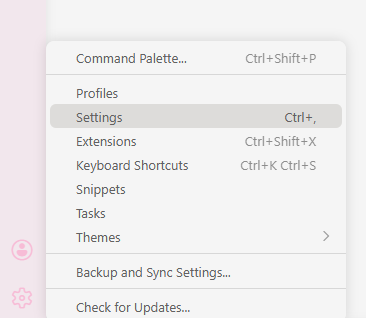
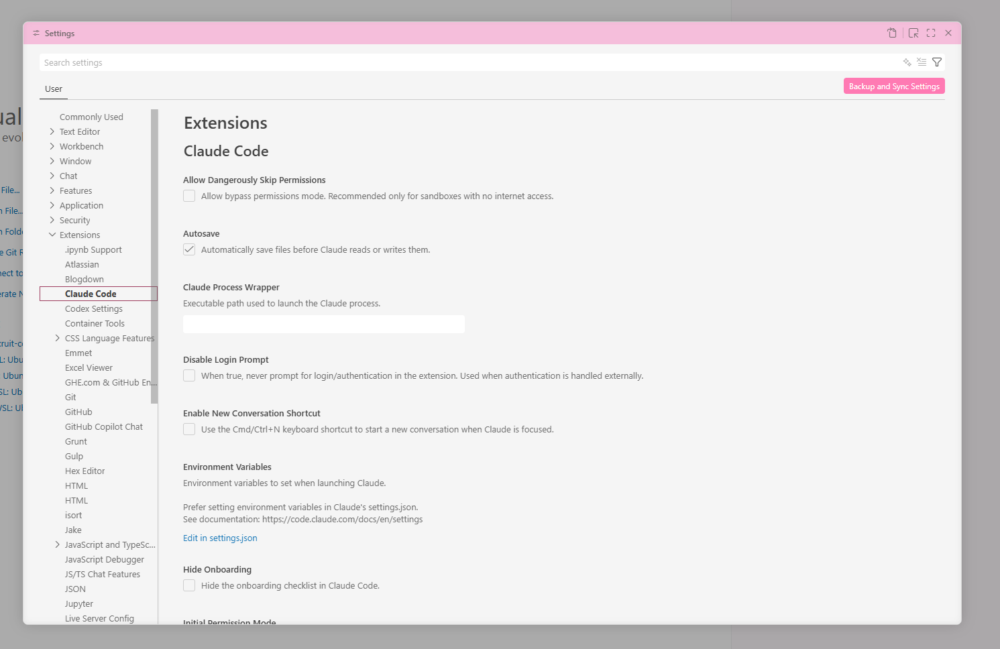
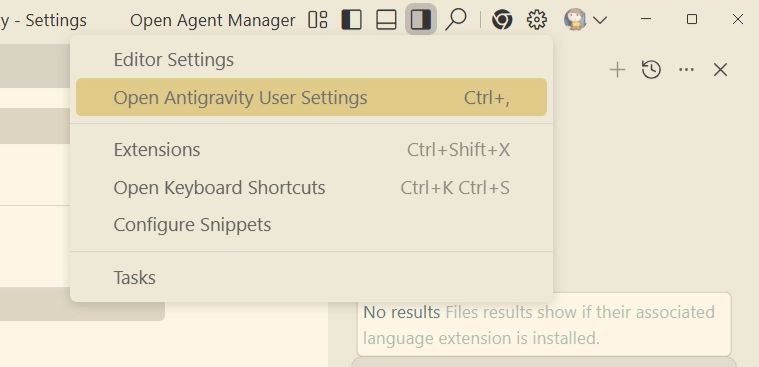
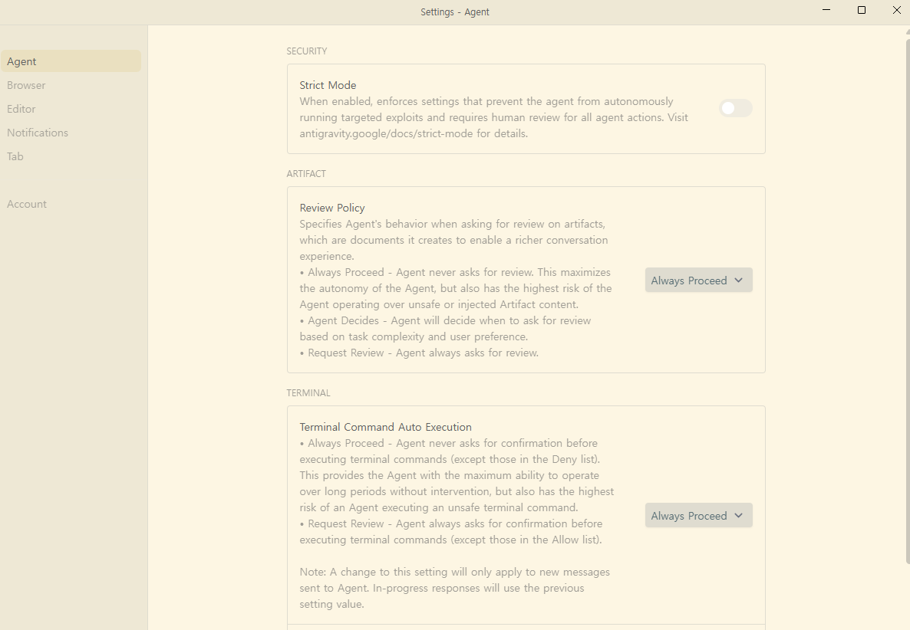
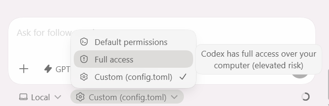
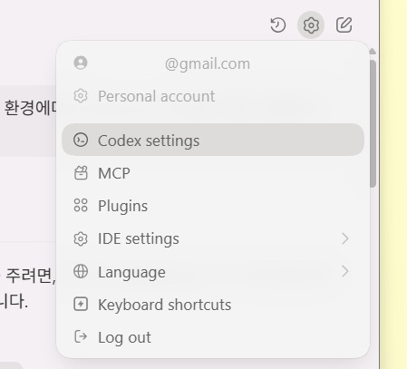
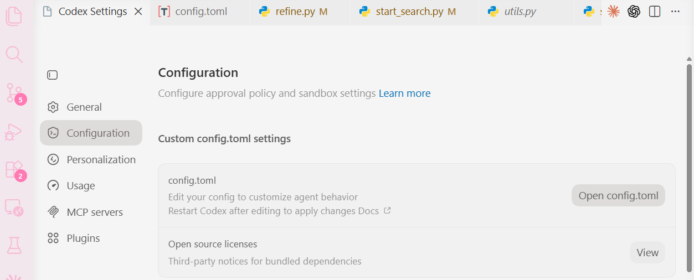
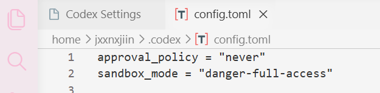

부록. 자동 허가 모드 설정¶
← 메인으로 실습 3 개요
코딩 에이전트는 기본적으로 안전을 위해 액션 실행 전 사용자에게 먼저 확인을 요청합니다. "이 파일을 수정해도 될까요?", "이 명령어를 실행해도 괜찮을까요?"
이번 실습에서는 매번 승인하는 번거로움을 줄이기 위해, 에이전트가 스스로 판단하고 자율적으로 행동할 수 있도록 설정을 변경합니다.
시작 전에 이것만 기억하세요
이 설정은 실습 환경(바탕화면의 practice_3 폴더)에서만 편의를 위해 사용합니다. 실제 업무 환경이나 민감한 파일이 있는 폴더에서는 기본 승인 모드로 돌아가 사용하시는 것을 권장합니다.
사용하시는 도구에 따라 아래 섹션 중 하나만 따라가시면 됩니다.
👾 Claude Code¶
Claude Code는 자유도에 따라 두 단계로 설정할 수 있습니다. 실습 3처럼 백엔드/프론트엔드까지 자동으로 켜고 반복 테스트해야 하는 상황에서는 자유도 上(Bypass Permissions) 쪽이 훨씬 덜 번거롭습니다.
| 단계 | 동작 | 추천 상황 |
|---|---|---|
| 자유도 中 — Edit Automatically | 파일 편집만 자동 승인 | 코드만 고쳐보는 실습 |
| 자유도 上 — Bypass Permissions | 편집 + 명령어 실행까지 자동 승인 | 서버 실행·설치·테스트까지 자동화 ⭐ 실습 3 권장 |
자유도 中. Edit Automatically¶
Claude Code 패널 하단 모드 드롭다운에서 Edit automatically 를 선택합니다.

모드별 차이
- Ask before edits — 수정할 때마다 묻습니다 (기본값)
- Edit automatically — 파일 편집은 자동, 터미널 명령은 여전히 확인 ⭐ 자유도 中
- Plan mode — 수정 전에 계획을 먼저 보여줍니다
선택하면 입력창 오른쪽 하단에 </> Edit automatically 라벨이 표시됩니다.
자유도 上. Bypass Permissions¶
파일 편집뿐 아니라 터미널 명령 실행까지 확인 없이 진행합니다. 먼저 VSCode 설정에서 이 모드를 허용한 뒤, Claude Code 하단에서 모드를 켜야 합니다.
1단계. VSCode 설정 열기 — 좌측 하단 톱니바퀴(⚙️) → Settings (단축키 Ctrl + ,)

2단계. Extensions → Claude Code — 왼쪽 트리에서 Extensions 를 펼쳐 Claude Code 를 클릭합니다.

3단계. Allow Dangerously Skip Permissions 체크 — 최상단 Allow Dangerously Skip Permissions 체크박스를 켭니다.

이 옵션이 무엇을 허용하나요
이 옵션을 활성화하면 Claude Code가 사용자의 별도 승인 없이 코드 수정과 명령어 실행을 직접 수행할 수 있게 됩니다. 보안이 중요한 프로젝트나 민감한 정보를 다루는 작업에서는 사용에 주의가 필요하며, 실습이 끝난 후에는 안전을 위해 설정을 비활성화하는 것을 권장합니다.
4단계. Claude Code 하단에서 Bypass permissions 선택 — 모드 드롭다운 맨 아래 Bypass permissions 항목을 선택합니다.

완료
입력창 오른쪽 하단에 Bypass permissions 라벨이 뜨면 적용된 것입니다. 이제 백엔드 실행·파일 편집·패키지 설치 같은 명령이 모두 자동으로 진행됩니다.
🛰️ Antigravity¶
1단계. 설정 메뉴 열기¶
Antigravity 상단의 설정(⚙️) 버튼 → Open Antigravity User Settings 를 클릭합니다. (단축키 Ctrl + ,)

2단계. Agent 탭에서 3가지 항목 변경¶
왼쪽의 Agent 탭으로 이동한 뒤, 아래 세 가지를 그대로 맞춰줍니다.

| 항목 | 변경할 값 |
|---|---|
| Strict Mode | Off |
| Review Policy | Always Proceed |
| Terminal Command Auto Execution | Always Proceed |
완료
세 항목이 모두 맞게 설정됐으면 창을 닫아도 자동으로 저장됩니다.
🤖 Codex¶
Codex는 두 가지 방법 중 편한 쪽을 고르시면 됩니다. 방법 1이 훨씬 간단합니다.
방법 1. 하단 설정 버튼에서 바로 (권장)¶
Codex 하단의 설정 버튼을 누르고 Full access 를 선택합니다.

"Codex has full access over your computer (elevated risk)" 라는 경고가 뜨는데, 이번 실습 폴더 안에서만 쓰는 거니 괜찮습니다. 실습이 끝난 뒤 Default permissions 로 돌려두시면 됩니다.
방법 2. config.toml 직접 편집¶
세밀한 제어를 원하면 설정 파일을 직접 바꿀 수 있습니다.
① 상단 설정 → Codex Settings

② Configuration → Open config.toml

③ 파일 상단에 아래 두 줄 추가

저장 후 Codex 재시작 필수
파일을 저장한 다음 Codex를 한 번 껐다가 다시 켜야 설정이 반영됩니다.
되돌리는 방법¶
실습이 끝나고 평소대로 쓰고 싶을 때:
| 도구 | 되돌리는 방법 |
|---|---|
| Claude Code | 모드 드롭다운에서 Ask before edits 로 변경 + (자유도 上을 썼다면) Settings → Extensions → Claude Code → Allow Dangerously Skip Permissions 체크 해제 |
| Antigravity | Agent 탭의 세 항목을 기본값(On, Ask, Ask)으로 복귀 |
| Codex | 하단 설정에서 Default permissions 선택, 또는 config.toml의 두 줄 삭제 |
← 메인으로 실습 3 개요